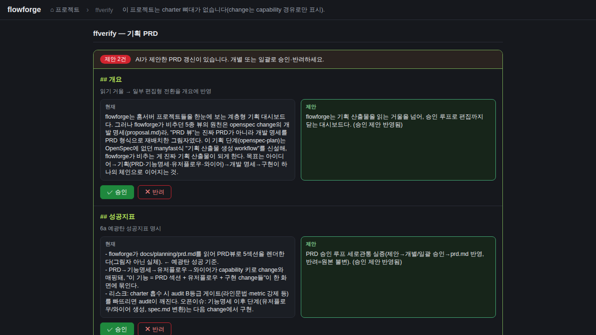
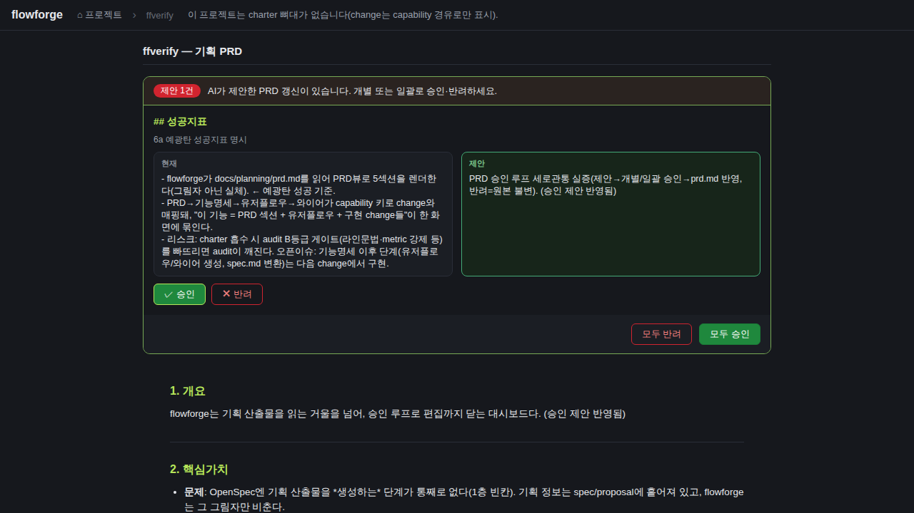
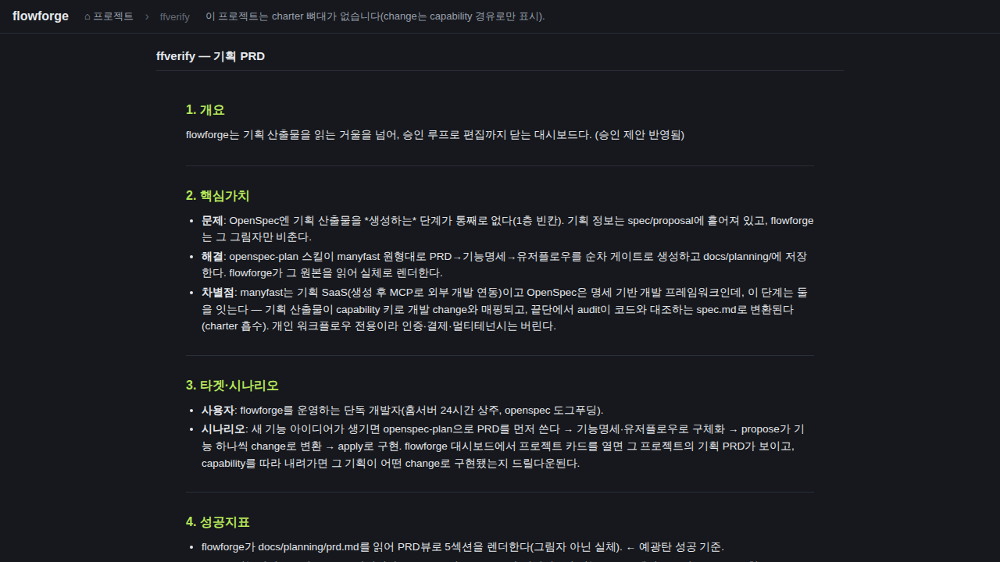

검증일: 2026-07-01T13:10:00+09:00 · 환경: server(jest) PASS · web(vite+Playwright 실픽셀) PASS · android SKIPPED(디렉토리 없음) · ios SKIPPED(macOS 필요) · run: run-20260701-1310
PASS 13 · FAIL 0 · 검증 안 함 0 · SKIPPED 0
| Requirement | Scenario | Layer | 검증 수단 | 탐지 근거(basis) | 결과 | 증거 |
|---|---|---|---|---|---|---|
| PRD 제안 큐 읽기 (planning-prd-approval-queue) | 제안 큐가 있는 프로젝트 조회 | web | Playwright 실픽셀: ffverify 카드→skeleton→'제안 2건' 배너+제안 카드 2개 렌더 관찰 | verify-prd-approval.mjs step1 + verify-01-queue.png | ✓ PASS |  |
| PRD 제안 큐 읽기 (planning-prd-approval-queue) | 제안 큐가 없는 프로젝트 조회 (빈 큐 폴백) | server | jest: 파일없음→{version:1,suggestions:[]} + 라우트 GET 200 빈큐 | docsPrdApproval.test.ts (lib+routes) | ✓ PASS | readDocsPrdSuggestions 파일없음→빈큐 / GET 200 {version:1,suggestions:[]} |
| PRD 제안 큐 읽기 (planning-prd-approval-queue) | 깨진 제안 큐 JSON (안전 폴백) | server | jest: 깨진 JSON→빈큐(throw 금지) | docsPrdApproval.test.ts | ✓ PASS | '{ not json' → {version:1,suggestions:[]} (throw 없음) |
| PRD 제안 큐 읽기 (planning-prd-approval-queue) | 경로 조작 차단 | server | 라우트 GET ..%2f..%2fetc → 404(resolveDocsDir 화이트리스트) | docsPrdApproval.test.ts | ✓ PASS | GET /api/docs/..%2f..%2fetc/planning-prd-suggestions → 404 |
| PRD 제안 큐 읽기 (planning-prd-approval-queue) | 스키마 검증 — 미인식 section/op는 걸러짐 | server | jest: bad-section·bad-op 필터→유효 항목만 반환 | docsPrdApproval.test.ts | ✓ PASS | isValidPrdSuggestion: section 5키·op=replace 아닌 항목 제외 → ['ok'] |
| PRD 제안 개별/일괄 승인·반려 적용 (planning-prd-approval-apply) | 단일 제안 승인 → 섹션 교체 반영 | web | Playwright 실픽셀: 개별 승인 클릭→prd.md '개요' 교체 반영+H1 서문 보존+큐 1건 감소 관찰 | verify-prd-approval.mjs step2 + verify-02-approve.png | ✓ PASS |  |
| PRD 제안 개별/일괄 승인·반려 적용 (planning-prd-approval-apply) | 일괄 승인 (여러 섹션 동시 교체) | server | jest: approve 2건(overview+metrics)→applied:2, 두 섹션 교체 | docsPrdApproval.test.ts | ✓ PASS | approve:['s1','s2']→applied:2, prd.md에 두 새 본문 모두 반영 |
| PRD 제안 개별/일괄 승인·반려 적용 (planning-prd-approval-apply) | 반려 — 원본 불변, 큐에서만 제거 | web | Playwright 실픽셀: 반려 클릭→원본 불변+큐 비면 순수 읽기 뷰 전환 관찰 | verify-prd-approval.mjs step3 + verify-03-reject-clean.png | ✓ PASS |  |
| PRD 제안 개별/일괄 승인·반려 적용 (planning-prd-approval-apply) | 같은 섹션에 대한 두 승인 — 순서 결정론 | server | jest: 같은 section 2제안(먼저/나중)→큐 순서 뒤가 이김 | docsPrdApproval.test.ts | ✓ PASS | approve:['s1','s2'] 같은 overview → '나중' 반영, '먼저' 아님 |
| PRD 제안 개별/일괄 승인·반려 적용 (planning-prd-approval-apply) | 미실재 id / 미실재 섹션 — 표면화 (silent drop 금지) | server | jest+라우트: nope→skipped 포함, applied:0, remaining 불변 | docsPrdApproval.test.ts | ✓ PASS | approve:['nope']→skipped:['nope'], applied:0, remaining:1 |
| PRD 제안 개별/일괄 승인·반려 적용 (planning-prd-approval-apply) | PRD 파싱 실패 시 원본 보호 | server | 라우트: 5섹션 아닌 prd.md 승인→422(writeFailed), 원본 안 씀 | docsPrdApproval.test.ts | ✓ PASS | 손상 prd.md + approve → POST 422(prd_write_failed), 원본 불변 |
| PRD 제안 개별/일괄 승인·반려 적용 (planning-prd-approval-apply) | 잘못된 요청 body 차단 | server | 라우트: {approve:'s1'}(배열 아님)→400(isPrdApplyRequest) | docsPrdApproval.test.ts | ✓ PASS | POST {approve:'s1'} → 400 invalid_request |
| PRD 제안 개별/일괄 승인·반려 적용 (planning-prd-approval-apply) | 경로 조작 차단 | server | 라우트 POST ..%2f..%2fetc → 404 | docsPrdApproval.test.ts | ✓ PASS | POST /api/docs/..%2f..%2fetc/.../apply → 404 |
| Requirement | null | 빈값 | 잘못된타입 | 경계값 | 에러경로 | 동시성 | 대량 | 특수문자 | 판정 |
|---|---|---|---|---|---|---|---|---|---|
| PRD 제안 큐 읽기 (planning-prd-approval-queue) | ✓ | ✓ | ✓ | N/A | ✓ | N/A | N/A | ✓ | ✓ 충분 |
| PRD 제안 개별/일괄 승인·반려 적용 (planning-prd-approval-apply) | ✓ | ✓ | ✓ | ✓ | ✓ | N/A | N/A | ✓ | ✓ 충분 |
✓=covered · N/A=해당없음(사유 hover) · ✗=missing. happy-path만이면 검증 불충분 → 최종 FAIL 차단.
| Layer | 상태 | ran | passed | failed | 근거/사유 |
|---|---|---|---|---|---|
| server | ✓ PASS | 24 | 24 | 0 | server workspace jest: docsPrdApproval lib 15 + routes 9 재실행(회귀 176/176 PASS, pipefail EXIT 0) |
| web | ✓ PASS | 3 | 3 | 0 | web workspace(vite/react 빌드·타입 PASS) + Playwright 실픽셀 격리 DOCS_ROOT:8899(승인루프 세로관통 관찰) |
| android | – SKIPPED | 0 | 0 | 0 | 웹 전용 프로젝트 |
| ios | – SKIPPED | 0 | 0 | 0 | macOS 필요 |
✓ PASS 통과
archiveGate.open = true (PASS일 때만 true). verify.json이 이 값을 archive 게이트에 전달.
{kind=link}
{kind=link}
{kind=link}